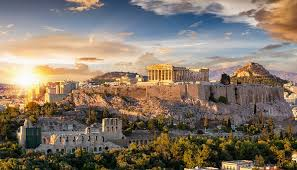
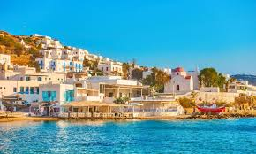
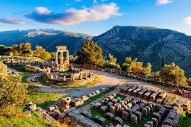
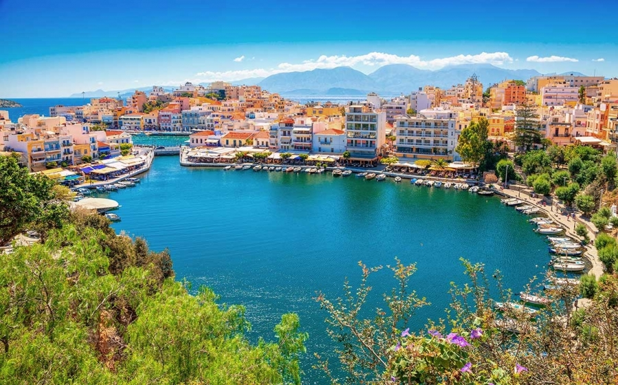
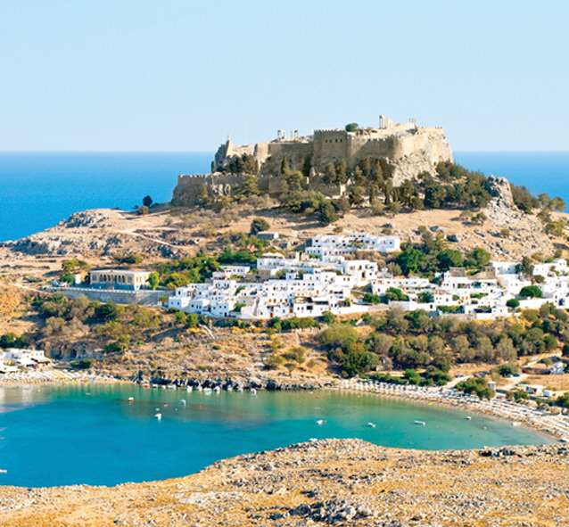
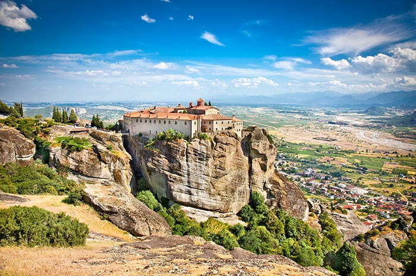
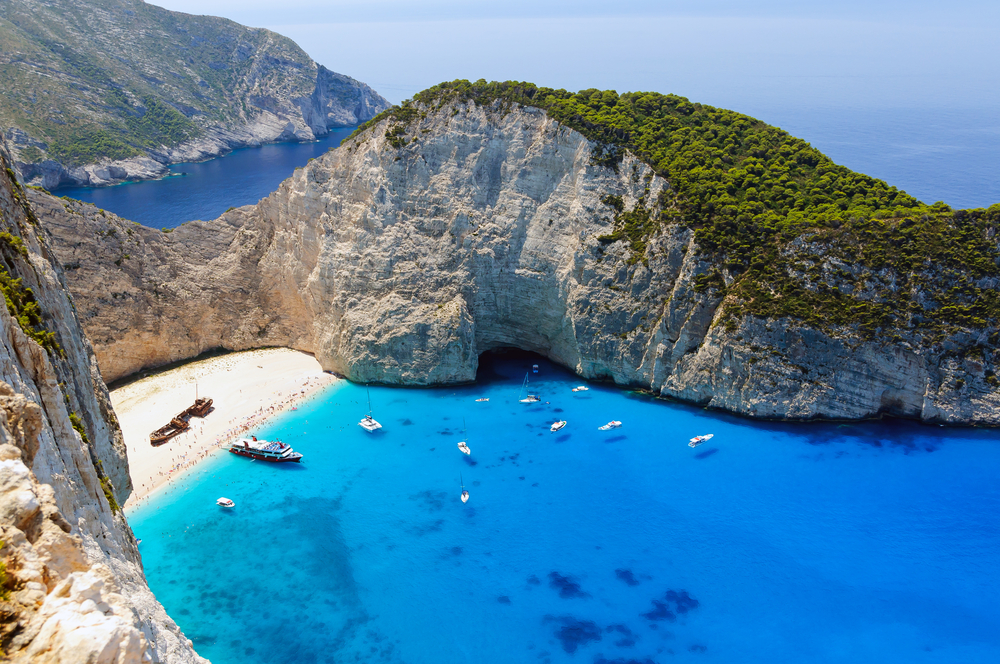
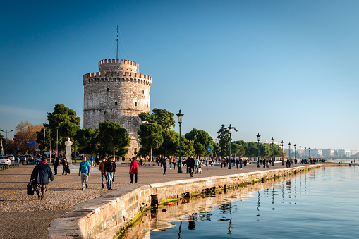
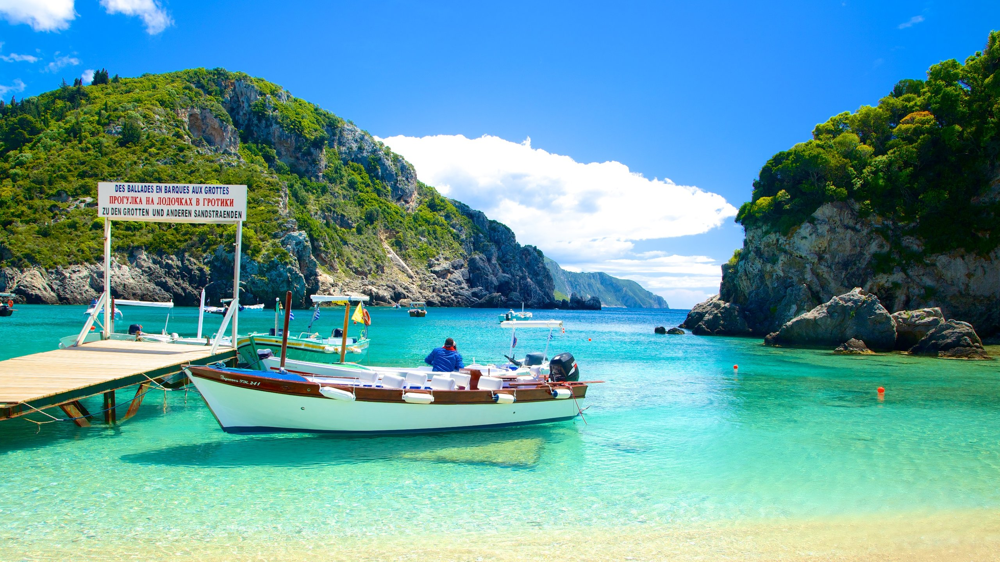

여행지 여행지 |
| 아테네 (Athens) |
고대 그리스 문명의 중심지인 아테네는 역사와 현대가 조화를 이루는 도시로 아크로폴리스와 파르테논 신전 등 세계적인 유적지를 탐방할 수 있다. |
주요 명소:
아크로폴리스,
파르테논,
국립 고고학 박물관 |
 |
| 산토리니 (Santorini) |
하얀 집들과 파란 지붕이 어우러진 절벽 마을이 있는 산토리니는 아름다운 석양으로 유명한 로맨틱한 섬으로 화산 온천과 와이너리 투어도 매력적이다. |
주요 명소:
오이아 마을,
피라,
카마리 해변 |
|
| 미코노스 (Mykonos) |
그리스의 대표적인 파티 섬으로 유명한 미코노스는 활기찬 밤문화와 아름다운 해변을 자랑하며 고풍스러운 마을과 현대적인 믈럽들이 함께 있다. |
주요 명소:
파라다이스 비치,
리틀 베니스,
델로스 유적지 |
 |
델피
(Delphi) |
고대 그리스에서 신탁이 이루어지던 델피는 신성한 유적지로 아폴론 신전이 있는 중요한 역사적 장소로 그리스 신화와 역사를 깊이 느낄 수 있다. |
주요 명소:
아폴론 신전
델피 고고학 박물관 |
 |
이 외에 추천
관광지 |
 |
 |
 |
 |
 |
 |